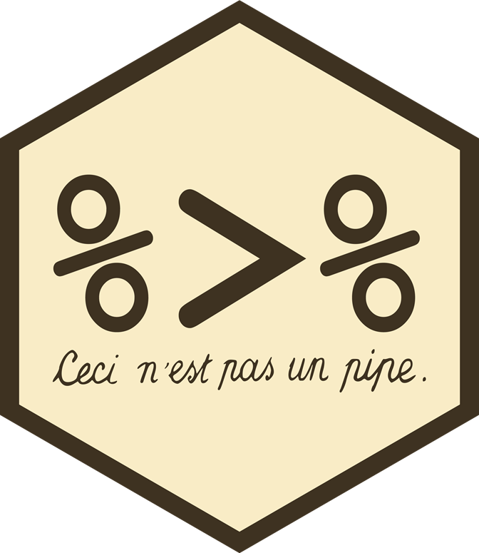

seq(from = 2, to = 100, by = 2)R & Data Science
R for Data Science
The Book

A data science process with R
A data science process with R

Operators, functions, and objects
Operators
Arithmatic operators
| Operator | Description | Example |
|---|---|---|
+ |
addition | 5+5=10 |
- |
subtraction | 5-5=0 |
* |
multiplication | 2*8=16 |
/ |
division | 100/10=10 |
^ (or **) |
exponent/power | 5^2=25 |
%% |
modulo | 100%%15=10 |
%/% |
integer division | 100%/%15=6 |
Relational and logical operators
| Type | Operator | Condition |
|---|---|---|
| Relational | x < y |
Where x less than y
|
x > y |
Where x greater than y
|
|
x <= y |
Where x less than or equal to y
|
|
x >= y |
Where x greater than or equal to y
|
|
x == y |
Where x (exactly) equals y
|
|
x != y |
Where x is not equal to y
|
|
| Logical | ! |
Negation |
& |
Logical “and” (x >= 20 & x < 35) |
|
| |
Logical “or (x == 20 | x > 45) |
|
xor |
Logical “exclusive or” (xor(x == 20, x == 50) |
|
| Miscellaneous | x %in% y |
Where x is in y
|
!x %in% y |
Where x is not in y
|
Assignment operators


Functions

Some Base R vector functions
| Function | Description |
|---|---|
round() |
Round number values |
min(), max()
|
Minimum and maximum |
mean(), median()
|
Arithmetic mean and median |
sum() |
Sum |
sd(), var()
|
Standard deviation and variance |
sqrt() |
Square root |
summary() |
Numerical summary |
str() |
Overview of the object structure |
any(), all()
|
Test vector elements |
all.equal() |
Test for near equality |
sort() |
Sort a vector |
order() |
Obtain ordering of a vector |
Data types

Vectors & data frames
Packages and Tidyverse
Packages: what are they?

Packages: how to install them

Tidyverse: a tidy universe
Tidyverse: core component packages
Tidyverse: philosophy
-
Human-centeredness
- For an end-user programmer
-
Consistency
- The smallest possible set of key ideas, used as comprehensively as possible
-
Composability
- Many simple pieces, composed for a larger task using operators such as |> and +
-
Inclusiveness
- Towards a diverse, open, and friendly community
Pipe Operator
magrittr

Basic principle

Basic principle

Native pipe operator


Pipe operator for EDA

No error, no gain!